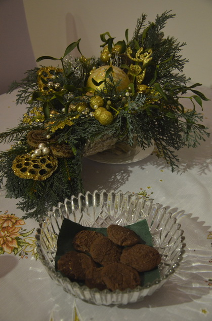

Vánoce se nezadržitelně blíží a jak všichni dobře víte, nejlíp cukroví chutná tak týden až dva před svátkama :D takže neleňte a upečte si tyhle báječné čokoládové sušenky ještě dnes. Jsou naprosto jednoduché, jedna dávka vám vyjde až na 5 plechů (!) a všichni okolo vás za ně budou zbožňovat. Fakt!
- 260g hladké mouky
- 60g kakaa
- 1 lžička prášku do pečiva
- špetka soli
- 1-2 tabulky hořké čokolády
- 250g másla
- 200g hnědého cukru
- 100g cukru krupice
- 2 velká vejce
- 1 lžička vanilkového extraktu
Troubu si předehřejeme na 170°C a plech si vyložíme pečicím papírem. Mouku prosijeme s kakaem, práškem do pečiva a solí. Čokoládu nasekáme na menší kousky. Změklé máslo a oba cukry šleháme asi 5 minut, poté přišleháme vejce a vanilkový extrakt. Postupně přidáváme mouku s kakaem a úplně nazávěr už ručně přimícháme nasekanou čokoládu. Dvěma lžičkami klademe kousky těsta v cca pěticentimetrovém rozestupu na plech. Každou várku pečeme 8-10 minut a necháme na pečicím papíře vychladnout.
Nejlepší jsou sušenky samozřejmě čerstvé, ale vydrží hezky měkké až týden a poté se stanou stále příjemně křupavými. Ale ony vám doma asi dýl jak týden stejně nezůstanou… ;-)

Sušenky a tradiční vánoční svícen od strýca